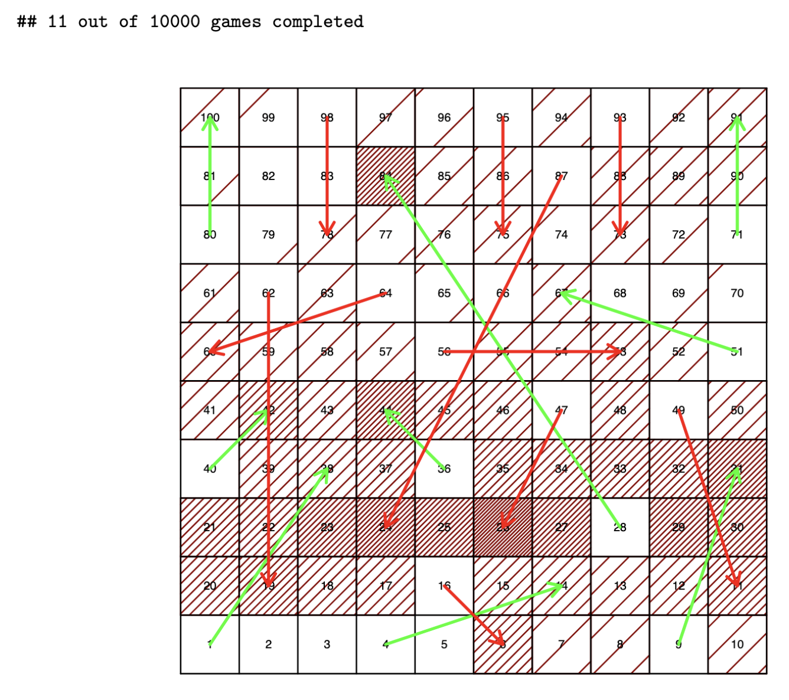

Modeled the childhood board game in R then simulated thousands of games to create a heatmaps after x number of rolls and analyzed most used chutes and ladders.
View on GitHubUCLA New Student Orientation
As part of my favorite segment of UCLA's new student orientation, the University Community Panel (UCP), I had the privilege of sharing my journey to and through UCLA. During UCP, three New Student Advisors (NSA) share their stories to the orientation session of 500+ incoming Bruins. My second summer as an NSA, I shared my ever complex and unfolding story twice in hopes of encouraging incoming students to recognize that they too have a story, one that started long before their arrival at college and one that is continued to be written.